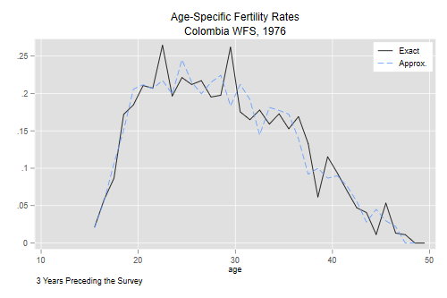
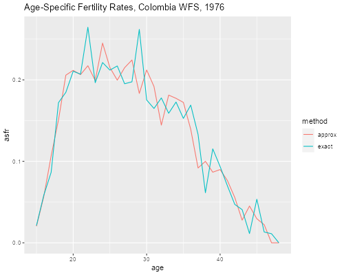

<h2 id="age-specific-fertility-rates">Age-Specific Fertility Rates</h2>
<p>I will illustrate the computation of single-year fertility rates from
survey data using two approaches, one based on an exact tally of events
and exposure by age, and a simple approximate method.</p>
<p>We will use WFS data from Colombia and compute rates for the
three-year period before the survey.</p>

{% include srtabs.html %}

<p>Here’s our final product</p>
<p> </p>
<p>As usual, we start by reading the data, an extract already
prepared.</p>
<pre class='stata'>. use https://grodri.github.io/datasets/cofertx, clear
(COSR02 extract)
</pre>
<pre class='r'>> library(foreign)
> co &lt;- read.dta("https://grodri.github.io/datasets/cofertx.dta")
</pre>
<p>This file is in “wide” format, with one record per woman, having her
data followed by data for up to 24 births, one after the other. The
layout of the file is as follows</p>
<pre><code>    v007 v008 m012 [bn1 bn2 bn3 bn4 bn5] v702 v703</code></pre>
<p>where <em>n</em> goes from <code>01</code> to <code>24</code> but at
most 19 slots are used, the rest are filled with <code>8's</code> for
“not used”. We are particularly interested in <code>bn2</code>, the date
of birth.</p>
<p>We can work with the file in “wide” format or create separate files
for women and births, with the births in “long” format”. I’ll use both
approaches, wide with Stata and long with R. The variables
<code>m012</code>, <code>v702</code> and <code>v703</code> are date of
first union, type of place of residence, and childhood place of
residence, respectively.</p>
<pre class='r'>> library(dplyr)
> co &lt;- mutate(co, id = row_number())
> cow &lt;- select(co, id, v007, v008, m012, v702, v703)
> bvars &lt;- c(paste("b0", 1:9, 2, sep=""), paste("b", 10:24, 2, sep=""))
> bwide &lt;- co[, c("v007", "v008", bvars)]
> cob &lt;- reshape(bwide, direction="long", varying = bvars, v.names = "bdate") |>
+ filter(bdate &lt; 8888)
</pre>
<h3 id="tallying-events-and-exposure">Tallying Events and Exposure</h3>
<p>I will create variables called <code>bot</code> and <code>top</code>
to define the window of observation. Exposure starts 36 months before
the survey or when the woman turns 15, whichever is later. The date of
interview is <code>v007</code> and the date ot birth of the woman is
<code>v008</code>.</p>
<pre class='stata'>. gen top = v007 - 1

. gen bot = v007 - 36

. gen turn15 = v008 + 180

. replace bot = turn15 if turn15 > bot
(895 real changes made)

. drop if bot > top // 15 obs on month of interview
(15 observations deleted)
</pre>
<pre class='r'>> cow &lt;- mutate(cow,
+   top = v007 - 1,     
+   turn15 = v008 + 180,
+   bot = ifelse(turn15 > v007 - 36, turn15, v007 - 36)) |>
+   filter(bot &lt;= top) # exclude 15 on month of interview           
</pre>
<p>A woman may contribute events and exposure to up to four different
ages. The easiest way to handle this is to create a separate record for
each year of age</p>
<pre class='stata'>. gen agebot = int((bot - v008)/12)

. gen agetop = int((top - v008)/12) // same as current age

. gen nages = agetop - agebot + 1

. gen id = _n
</pre>
<pre class='r'>> cow &lt;- mutate(cow, 
+   agebot = floor((bot - v008)/12),
+   agetop = floor((top - v008)/12),
+   nages = agetop - agebot + 1)
</pre>
<p>To show exactly what’s going on I’ll list case 1 before and after the
split</p>
<pre class='stata'>. list v007 v008 bot top agebot agetop nages b012 b022 in 1

     ┌─────────────────────────────────────────────────────────────────────┐
     │ v007   v008   bot   top   agebot   agetop   nages   b012       b022 │
     ├─────────────────────────────────────────────────────────────────────┤
  1. │  917    532   881   916       29       32       4    890   No birth │
     └─────────────────────────────────────────────────────────────────────┘

. expand nages
(13,841 observations created)

. bysort id: gen age = agebot + _n - 1

. list v007 v008 id age bot top b012 b022 if id==1

       ┌──────────────────────────────────────────────────────┐
       │ v007   v008   id   age   bot   top   b012       b022 │
       ├──────────────────────────────────────────────────────┤
    1. │  917    532    1    29   881   916    890   No birth │
    2. │  917    532    1    30   881   916    890   No birth │
    3. │  917    532    1    31   881   916    890   No birth │
    4. │  917    532    1    32   881   916    890   No birth │
       └──────────────────────────────────────────────────────┘
</pre>
<pre class='r'>> head(select(cow, id, v007, v008, bot, top, agebot, agetop, nages), 1)
  id v007 v008 bot top agebot agetop nages
1  1  917  532 881 916     29     32     4
> i &lt;- rep(1:nrow(cow), cow$nages)
> cow &lt;- cow[i, ]
> cow &lt;- group_by(cow, id) |> mutate(age = agebot + row_number() - 1)  
> filter(cow, id==1) |> 
+   select(id, v007, v008, bot, top, agebot, agetop, nages, age)
# A tibble: 4 × 9
# Groups:   id [1]
     id  v007  v008   bot   top agebot agetop nages   age
  &lt;int> &lt;int> &lt;int> &lt;dbl> &lt;dbl>  &lt;dbl>  &lt;dbl> &lt;dbl> &lt;dbl>
1     1   917   532   881   916     29     32     4    29
2     1   917   532   881   916     29     32     4    30
3     1   917   532   881   916     29     32     4    31
4     1   917   532   881   916     29     32     4    32
</pre>
<p>Now we have a record for each woman-year, with the age of the woman
that year. We just have to fix the start and end date of each segment. A
segment starts at <code>bot</code> or at a birthday, and ends a year
later or at <code>top</code>.</p>
<pre class='stata'>. gen bday = v008 + 12*age

. replace bot = bday if bday > bot
(13,841 real changes made)

. replace top = bday + 11 if bday + 11 &lt; top
(13,841 real changes made)

. gen expo = top - bot + 1 // in months for now

. list v007 v008 id age bot top expo b012 b022 if id==1

       ┌─────────────────────────────────────────────────────────────┐
       │ v007   v008   id   age   bot   top   expo   b012       b022 │
       ├─────────────────────────────────────────────────────────────┤
    1. │  917    532    1    29   881   891     11    890   No birth │
    2. │  917    532    1    30   892   903     12    890   No birth │
    3. │  917    532    1    31   904   915     12    890   No birth │
    4. │  917    532    1    32   916   916      1    890   No birth │
       └─────────────────────────────────────────────────────────────┘
</pre>
<pre class='r'>> cow &lt;- mutate(cow, 
+   bday = v008 + 12 * age,
+   bot = ifelse(bday > bot, bday, bot),
+   top = ifelse(bday + 11 &lt; top, bday + 11, top),
+   expo = top - bot + 1) 
> filter(select(cow, v007, v008, age, bot, top, expo), id==1)       
# A tibble: 4 × 7
# Groups:   id [1]
     id  v007  v008   age   bot   top  expo
  &lt;int> &lt;int> &lt;int> &lt;dbl> &lt;dbl> &lt;dbl> &lt;dbl>
1     1   917   532    29   881   891    11
2     1   917   532    30   892   903    12
3     1   917   532    31   904   915    12
4     1   917   532    32   916   916     1
</pre>
<p>All that remains is to count births in each age segment, <span
class="stata">which we do by looping over the variables
<code>b012 ... b242</code>.</span><span class="r">which we do by joining
births by id and age of mother.</span></p>
<pre class='stata'>. gen births = 0

. forvalues i=1/24 {
  2.   local n = "`i'"
  3.   if `i' &lt; 10 local n = "0`i'"
  4.  qui replace births = births + 1 if b`n'2 >= bot &amp; b`n'2 &lt;= top
  5. }

. tab births

     births │      Freq.     Percent        Cum.
────────────┼───────────────────────────────────
          0 │     17,102       89.05       89.05
          1 │      2,081       10.84       99.89
          2 │         21        0.11      100.00
────────────┼───────────────────────────────────
      Total │     19,204      100.00

. list v007 v008 id age bot top expo births if id==1

       ┌────────────────────────────────────────────────────┐
       │ v007   v008   id   age   bot   top   expo   births │
       ├────────────────────────────────────────────────────┤
    1. │  917    532    1    29   881   891     11        1 │
    2. │  917    532    1    30   892   903     12        0 │
    3. │  917    532    1    31   904   915     12        0 │
    4. │  917    532    1    32   916   916      1        0 │
       └────────────────────────────────────────────────────┘
</pre>
<pre class='r'>> cob &lt;- mutate(cob, 
+   age = floor((bdate - v008)/12)) |>
+   filter(bdate >= v007 - 36 &amp; bdate &lt; v007 &amp; age >= 15)
> coba &lt;- group_by(cob, id, age) |> summarize(births = n())        
> cowb &lt;- left_join(cow, coba, by = c("id", "age")) 
> cowb$births[is.na(cowb$births)] &lt;- 0
</pre>
<p>Finally we collapse the dataset by age (and any additional variables
of interest, such as residence or education), express exposure in years
rather than months, and compute the rates</p>
<pre class='stata'>. collapse (sum) births (sum) expo, by(age)

. replace expo=expo/12
(35 real changes made)

. gen asfr = births/expo
</pre>
<pre class='r'>> cofr &lt;- group_by(cowb, age) |> 
+   summarize(
+     births = sum(births),
+     expo = sum(expo)/12,
+     asfr = births/expo)
</pre>
<p>Let us compute the Total Fertility rate (TFR) and the mean age of the
fertility schedule, for which we need the midpoints of the age
groups.</p>
<pre class='stata'>. sum asfr

    Variable │        Obs        Mean    Std. dev.       Min        Max
─────────────┼─────────────────────────────────────────────────────────
        asfr │         35    .1293665    .0811364          0   .2645395

. di r(sum)
4.527827

. gen agem = age + 0.5

. sum agem [aw=asfr]

    Variable │     Obs      Weight        Mean   Std. dev.       Min        Max
─────────────┼─────────────────────────────────────────────────────────────────
        agem │      33  4.52782704     28.6831   7.300789       15.5       47.5
</pre>
<pre class='r'>> cofr &lt;- mutate(cofr, agem = age + 0.5)
> summarize(cofr, 
+   tfr = sum(asfr), 
+   mac = weighted.mean(agem, asfr))
# A tibble: 1 × 2
    tfr   mac
  &lt;dbl> &lt;dbl>
1  4.53  28.7
</pre>
<p>The TFR is 4.53 and the mean age of childbearing is 28.7. To plot the
rates we use the midpoints of the age groups.</p>
<pre class='stata'>. scatter asfr agem, xtitle(age)
</pre>
<pre class='r'>> library(ggplot2)
> ggplot(cofr, aes(agem, asfr)) + geom_line()
</pre>
<p>This is the curve labeled “exact” at the top of the page. The pattern
looks quite reasonable, except perhaps for the rates at ages 22 and 29
which seem a bit out of line. <span class="stata">I’ll save these
results for later use.</span></p>
<pre class='stata'>. save coasfr, replace
file coasfr.dta saved
</pre>
<p>To compute rates for five-year age groups one can simply recode age
and collapse again. You might find it instructive to do the calculation
for five-year groups from scratch.</p>
<div class="stata">
<p>Bruno Schoumaker (2013) has written a Stata command called
<code>tfr2</code> to implement the procedures described here, see <a
href="https://www.demographic-research.org/volumes/vol28/38/">Demographic
Research, vol 28, article 38</a>. His figure 5 should look familiar.</p>
</div>
<h3 id="a-simple-approximation">A Simple Approximation</h3>
<p>A much simple approach is to attribute events and exposure to the age
of each woman in the middle of her observation period. Results are often
very similar. (This is my preferred approach for fitting regression
models, among other things because it keeps a single observation per
woman.)</p>
<p>We start by defining the observation window just as before</p>
<pre class='stata'>. use https://grodri.github.io/datasets/cofertx, clear
(COSR02 extract)

. gen top = v007 - 1

. gen bot = v007 - 36

. gen turn15 = v008 + 180

. replace bot = turn15 if turn15 > bot
(895 real changes made)

. drop if bot > top // 15 on month of interview
(15 observations deleted)
</pre>
<pre class='r'>> cos &lt;- mutate(co,
+   turn15 = v008 + 180,
+   top = v007 - 1,
+   bot = ifelse(turn15 > v007 - 36, turn15, v007 - 36)) |>
+ filter( bot &lt;= top)
</pre>
<p>But we then simply counts events and exposure in the window and
attribute them to age at the midpoint,</p>
<pre class='stata'>. gen age = int( ((bot + top)/2 - v008)/12)

. gen expo = top - bot + 1

. gen births = 0

. forvalues i=1/24 {
  2.   local n = "`i'"
  3.   if `i' &lt; 10 local n = "0`i'"
  4.     qui replace births = births+1 if b`n'2 >= bot &amp; b`n'2 &lt;= top
  5. }

. tab births

     births │      Freq.     Percent        Cum.
────────────┼───────────────────────────────────
          0 │      3,720       69.36       69.36
          1 │      1,210       22.56       91.93
          2 │        386        7.20       99.12
          3 │         47        0.88      100.00
────────────┼───────────────────────────────────
      Total │      5,363      100.00
</pre>
<pre class='r'>> cos$births &lt;- 0
> for(j in 1:24) {
+   name &lt;- paste(ifelse(j &lt; 10, "b0", "b"), j, "2", sep="")
+   cos$births &lt;- cos$births + (cos[,name] >= cos$bot &amp; cos[,name] &lt;= cos$top)
+ }
> cos &lt;- mutate(cos, 
+   age = floor(((bot + top)/2 - v008)/12),
+   expo = top - bot + 1)
</pre>
<p>We now collapse and compute rates, as well as the TFR and mean age of
childbearing</p>
<pre class='stata'>. collapse (sum) births (sum) expo, by(age)

. replace expo = expo/12
(34 real changes made)

. gen asfr = births/expo

. sum asfr

    Variable │        Obs        Mean    Std. dev.       Min        Max
─────────────┼─────────────────────────────────────────────────────────
        asfr │         34    .1323788     .077477          0    .245098

. di r(sum)
4.5008806

. gen agem = age + 0.5

. sum agem [aw=asfr]

    Variable │     Obs      Weight        Mean   Std. dev.       Min        Max
─────────────┼─────────────────────────────────────────────────────────────────
        agem │      32  4.50088059    28.62576   7.279611       15.5       46.5
</pre>
<pre class='r'>> cofers &lt;- group_by(cos, age) |>
+ summarize(
+   births = sum(births),
+   expo = sum(expo)/12) |>
+   mutate( 
+     asfr = births/expo,
+     agem = age + 0.5)
> summarize(cofers,
+   tfr = sum(asfr),
+   mac = weighted.mean(agem, asfr))
# A tibble: 1 × 2
    tfr   mac
  &lt;dbl> &lt;dbl>
1  4.50  28.6
</pre>
<p>The TFR is 4.50 and the mean age of childbearing is 28.6.</p>
<p>Let me merge the previous results to compare the exact and
approximate estimates up to age 48. <span class="stata">I will rename
the rates and drop births, exposure, and the age midpoints, to avoid
name conflicts.</span></p>
<pre class='stata'>. rename asfr asfra

. drop births expo agem

. merge 1:1 age using coasfr

    Result                      Number of obs
    ─────────────────────────────────────────
    Not matched                             1
        from master                         0  (_merge==1)
        from using                          1  (_merge==2)

    Matched                                34  (_merge==3)
    ─────────────────────────────────────────

. twoway (line asfr agem ) (line asfra agem, lp(dash)) , ///
>   title("Age-Specific Fertility Rates") xtitle(age)  ///
>   subtitle("Colombia WFS, 1976") note(3 Years Preceding the Survey) ///
>   legend(ring(0) pos(1) order(1 "Exact" 2 "Approx.") cols(1) size(small))

. graph export coasfr.png, width(500) replace
file coasfr.png saved as PNG format
</pre>
<pre class='r'>> codf &lt;- data.frame( 
+   age = rep(15:48, 2),
+   asfr = c(cofr$asfr[-35], cofers$asfr),
+   method = factor(rep(c("exact","approx"),rep(34,2)))
+ )
> ggplot(codf, aes(age, asfr, color=method)) + geom_line() +
+   ggtitle("Age-Specific Fertility Rates, Colombia WFS, 1976")
> ggsave("coasfrr.png", width = 500/72, height = 400/72, dpi = 72)
</pre>
<p>This, of course, is the figure at the top of this page.</p>
<!-- need foreign for the code to work, haven breaks reshape -->
